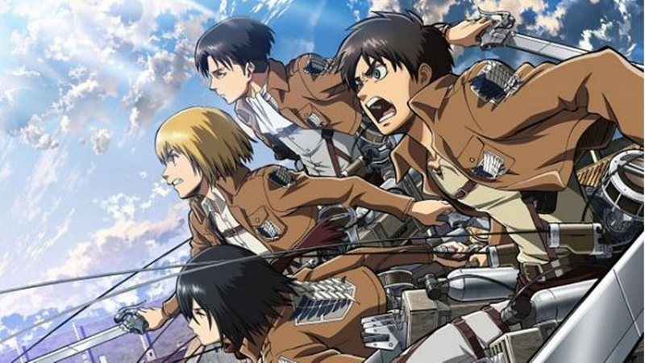

Top 10 Animes

Essa é uma lista sobre os 10 melhores animes, baseados na minha opinião.
1: One Piece
.jpg)
Criado por Eichiro Oda, One piece conta a história sobre um pirata chamado Luffy, que tem o sonho de ser o Rei dos Piratas. Para isso, ele decide juntar companheiros para ir nessa aventura. O anime também ganhou Live Action na Netflix.
O anime tem 53 arcos e 9 sagas.
Os personagens dos Chapéus de Palha (tripulação do Luffy) são: Zoro, Sanji, Nami, Usopp, Franky, Jinbei, Robin, Luffy, Brook e Chopper.
2: Dragon Ball Z

Criado por Akira Toriyama, Dragon Dragon Ball Z, conta como Goku parte numa aventura para conseguir todas as Esferas do Dragão (7).
As esferas podem conceder qualquer desejo a quem a usar, desde ressurreição, á dinheiro.
O Anime tem 4 sagas e 19 arcos.
3: Hunter x Hunter
.jpg)
Criado por Yoshihiro Togashi, o Anime conta como o protagonista Gon, descobre que seu pai era um caçador e ainda está vivo, na busca por seu pai, Ging, Gon decide participar do teste para ser um Caçador, e planeja usar suas habilidades para localizar seu pai.
Personagens principais: Gon, Killua, Hisoka, Kurapika, Ging, Neferpitou, Netero, Leorio, Meruem...
O Anime tem 9 sagas e 21 arcos
4: One Punch Man
.jpg)
Criado por Yusuke Murata, One punch man se resume como um garoto chamado Saitama, ganha poderes sobre-humanos enquanto treinava, depois disso, Saitama começa a facilmente derrotar inimigos com apenas um soco, ele começa a ganhar espaço na divisão de heróis, e se junta a Genos para derrotar mais e mais inimigos.
Personagens: Saitama, Genos, Tornado, Garou, Rider, Fubuki,...
O Anime tem 3 sagas e 15 arcos.
5: Demon Slayer
Criado por Koyoharu Gotouge, Esse anime conta sobre Tanjiro, um garoto que teve sua família assassinada por um demônio, enquanto ele estava pegando madeira. Quando ele voltou, sua irmão tinha virado um oni (demônio), e agora busca transformar sua irmã em humana novamente. Ele encontra com o Hashira Tomioka, que o ajuda com essa missão, mas o protagonista irá precisar derrotar os Luas de Muzan (demônios mais fortes).
Personagens: Tanjiro, Nezuko, Zenitsu, Inosuke, Muzan, Luas (Kyogai, Kamanue, Rui, Mukago, Wuakubara, Rokuro, Enmu, Akaza, Kokushibu, Douma, Gyokko, Kaigaku, Nakime, Hantengu, Daiki e Gyutaro), e os Hashiras (Tomioka, Shinobu, Mitsuri, Rengoku, Sanemi, Obanai, Gyomei, Uzui e Tokito).
O anime tem 12 arcos
6: Death Note
.jpg)
Death Note é uma série escrita por Tsugumi Ohba, que conta a história de um jovem estudante chamado Light Yagami que achou um caderno com poderes sobrenaturais, chamado Death Note, no qual era possível matar uma pessoa apenas escrevendo seu nome no caderno. Quando o descobre, Light tenta eliminar todos os criminosos do mundo e dar à sociedade um mundo livre do mal. Mas seus planos começam a sair de rumo quando o detetive L decide contrair Light.
Personagens: L, Kira (Light), Ryuk, Pai do Light, Misa, os ladrões...
7: Naruto Shipuden
.jpg)
Criado por Masashi Kishimoto, o anime conta sobre Naruto, que teve a Raposa De Nove Caudas selada em seu corpo (Kurama), Minato, o 4 Hokage, e Kushina, sem escolha, tiveram que selar a Kuarama em seu filho. Naruto, quando cresceu teve que enfrentar o grupo da Akatsuki, que tinha Obito, a pessoa que matou seu pai.
Personagens: Naruto, Minato, Kushina, Sasuke, Sakura, Kakashi, Grupo da Akatsuki, Orochimaru, Tsunade...
O anime tem Naruto clássico, onde mostra o protagonista quando criança e o Naruto Shipuden.
8: Pokémon
Criado por Satoshi Tajiri, Pokémon fala sobre Ash, uma criança com o sonho de ser um mestre pokémon. Ash chega atrasado no laboratório para pegar seu ókémon inicial, então, Prof. Carvalho decide dar para Asho Pikachu, que vira seu companheiro em toda a aventura. Ash captura pokémon para ficar mais forte e luta contra vários treinadores, conseguindo insígnias, que são usadas para ir á liga nacional.
Personagens: Ash, Misty, Brock, Prof Carvalho, Surge, Erika, Koga, Sabrina, Blaine, Giovani...
"Pokemon" é um anime japonês que segue as aventuras de um jovem treinador de Pokémon chamado Ash Ketchum, que sonha em se tornar um Mestre Pokémon. Ao longo de sua jornada, ele viaja pelas várias regiões do mundo Pokémon, capturando novos Pokémon, batalhando contra outros treinadores e competindo em torneios de ginásio para ganhar insígnias. Acompanhado por seus amigos leais, como Pikachu, Brock e Misty, Ash enfrenta desafios, encontra novos amigos e inimigos, e descobre segredos sobre o mundo dos Pokémon. A série é conhecida por sua vasta galeria de criaturas únicas, sua mensagem de amizade e trabalho em equipe, e sua capacidade de cativar tanto crianças quanto adultos desde sua estreia em 1997. Ao longo dos anos, o anime gerou uma franquia massiva, incluindo jogos de videogame, filmes, brinquedos e uma comunidade global de fãs dedicados.
9: Nanatsu No Taizai

"Nanatsu no Taizai" é um anime japonês que narra a história de um grupo de guerreiros lendários conhecidos como os Sete Pecados Capitais. Após serem acusados injustamente de trair o reino de Liones, os Sete Pecados Capitais desapareceram. Dez anos depois, a princesa Elizabeth decide procurá-los para ajudar a recuperar o reino, que está sob o controle dos Cavaleiros Sagrados, que traíram o rei. Ao longo da jornada, Elizabeth encontra Meliodas, o líder dos Sete Pecados Capitais, e juntos eles embarcam em uma missão para reunir os outros membros do grupo e restaurar a paz no reino. Cada membro dos Sete Pecados Capitais possui habilidades únicas e um passado misterioso que se desenrola ao longo da série. A história é marcada por batalhas épicas, traições surpreendentes e revelações emocionantes sobre os personagens principais. Além disso, o anime explora temas de amizade, redenção e o poder do amor e da coragem diante da adversidade.
Personagens: Meliodas, Elizabeth Liones, Ban, King, Diane, Gowther, Merlin, Escanor, Hawk, Gilthunder, Hendrickson, Zeldris, Estarossa, Elaine, Jericho, Gowther (Imperador Demônio), Dreyfus, Griamore, Veronica Liones, Monspeet, Derieri.
10: Attack on Titan
"Attack on Titan" é um anime e mangá japonês que se passa em um mundo onde a humanidade está à beira da extinção devido ao aparecimento repentino de gigantescas criaturas humanoides conhecidas como Titãs. Os remanescentes da humanidade vivem dentro de enormes muralhas para se protegerem dessas ameaças. A história segue Eren Yeager, sua irmã adotiva Mikasa Ackerman e seu amigo Armin Arlert, que testemunham a destruição de sua cidade natal por um Titã colossal e juram vingança, ingressando no Corpo de Exploração para lutar contra os Titãs. Ao longo da série, os personagens enfrentam uma série de mistérios, incluindo a origem dos Titãs, a verdade por trás das muralhas e os segredos sombrios do governo. Eren descobre que ele tem a capacidade de se transformar em um Titã, desencadeando uma série de eventos que mudam o curso da história. A narrativa explora temas como sobrevivência, corrupção, moralidade e o custo da guerra. A série é conhecida por sua trama intricada, reviravoltas surpreendentes, personagens complexos e cenas de ação intensas. Ao longo das temporadas, os espectadores são apresentados a uma série de novos personagens, cada um com sua própria história e motivações. "Attack on Titan" é aclamado por sua profundidade emocional e impacto visual, tornando-se um dos animes mais populares e influentes dos últimos anos.
Personagens: Eren Yeager, Mikasa Ackerman, Armin Arlert, Levi Ackerman, Erwin Smith, Historia Reiss, Reiner Braun, Jean Kirstein